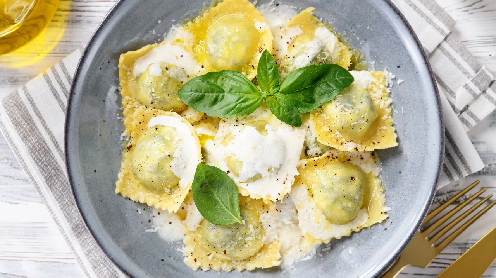
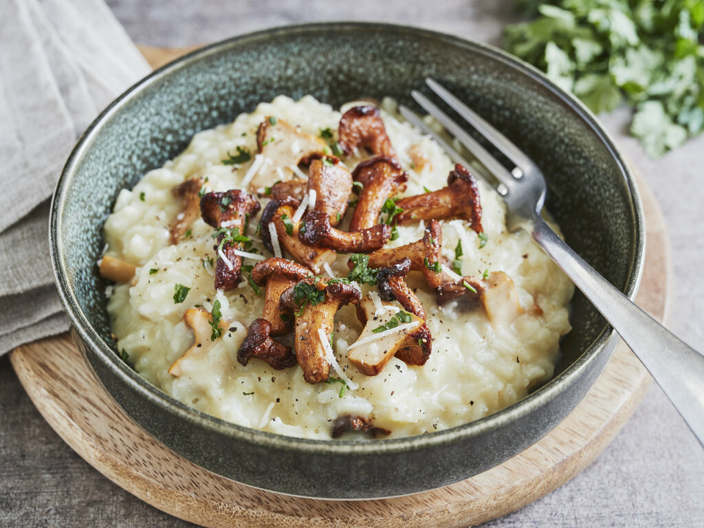
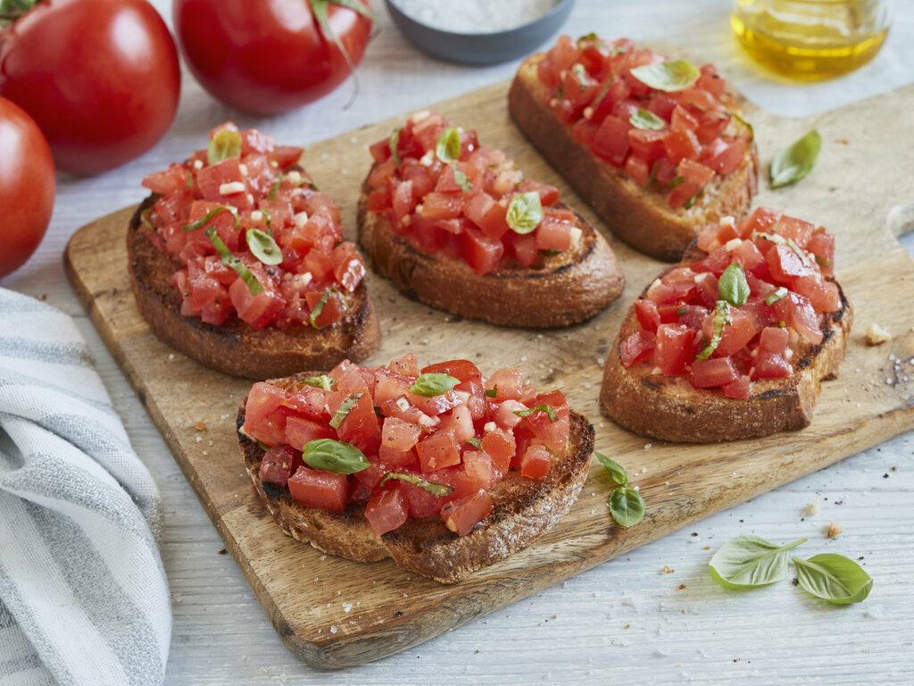

Pizza

This one is probably the most popular italian dish ever.
Pizza comes from Naples, Italy, and it became popular worldwide because it's simple and tasty.
It starts with fresh dough, tomato sauce, and melted mozzarella and then you can add anything
from veggies to pepperoni and even seafood.
But of course you can also just leave it as the iconic
Margherita.
Spaghetti Bolognese

Another absolute classic from Italian cuisine.
Spaghetti Bolognese comes from the city of Bologna and became a worldwide favorite because it's rich,
hearty, and obviously tasty.
It's made with spaghetti topped with a slow-cooked meat sauce full of tomatoes, onions, garlic, and herbs.
You can keep it traditional, add veggies, or swap the pasta type — but the classic version is always a
winner.
Tagliatelle

Tagliatelle comes from the Emilia-Romagna region and is loved for its perfect balance of softness and bite. It pairs amazing with creamy sauces, mushroom dishes, or the classic ragù — the wide noodles hold every bit of flavor. Whether you keep it simple or go all out, tagliatelle always feels like real Italian comfort food.
Ravioli
An Italian classic that's basically pasta with a surprise inside. Ravioli come from Northern Italy and are loved for their soft texture and endless filling options. Each little pasta pocket can be stuffed with cheese, spinach, meat, or mushrooms, and they’re usually served with tomato sauce, butter and sage, or a creamy sauce.
Gnocchi

Gnocchi are small Italian dumplings made mainly from potatoes and flour, giving them a soft and slightly chewy texture. They originate from Northern Italy and are commonly served with sauces like tomato, pesto, butter and sage, or rich cream sauces that coat them well.
Risotto
Risotto is a traditional Italian rice dish made by slowly cooking short-grain rice in broth until it becomes creamy and rich. It originates from Northern Italy, especially the Lombardy and Veneto regions. Common variations are mushroom risotto and seafood risotto each absorbing flavor deeply due to the rice's high starch content.
Lasagna

One of my favourites from Italy: Lasagna.
Lasagna is a layered Italian pasta dish made with wide, flat pasta sheets, a rich meat or
vegetable sauce, creamy béchamel, and melted cheese.
It originates from the Emilia-Romagna region.
Traditional versions use ragù (a slow-cooked meat sauce), but variations with spinach, vegetables, or
different cheeses are also really popular.
Bruschetta
Bruschetta is a traditional Italian appetizer made with grilled bread rubbed with garlic and topped with ingredients like fresh tomatoes, olive oil, basil, or cured meats. It originates from Central Italy and is popular for its fresh, simple flavors. Variations can include toppings such as roasted vegetables, cheeses, or spreads, but the classic tomato version remains the most well-known.
Salad Caprese

Caprese salad is a classic Italian dish made with fresh mozzarella, ripe tomatoes, and basil leaves, usually drizzled with olive oil and sometimes balsamic vinegar. It originates from the island of Capri in Southern Italy. The salad highlights simple, high-quality ingredients and is often served as an appetizer or side dish.